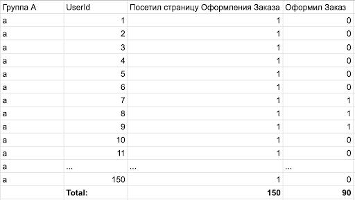
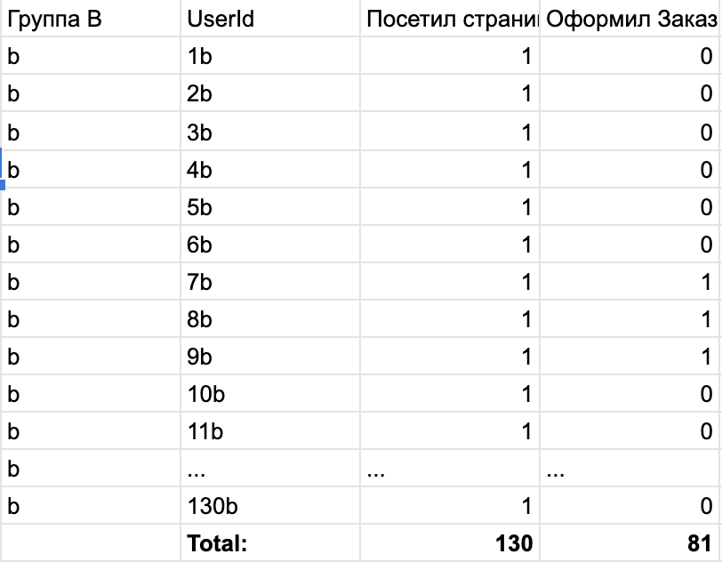

Этот критерий (или, как мы договорились, инструмент) следует использовать тогда, когда мы хотим провести A/B тест для какой-либо фичи, в которой нас интересует конверсия после ее использования. В таком случае мы можем представить наши данные в виде испытаний Бернули.
Количество пользователей, которые просто воспользовались нашей фичей, представим как m.
Кол-во пользователей, которые воспользовались нашей фичей и сделали полезное действие, представим как n.
Тогда математическое ожидание (в нашем случае конверсия) будет равно p = n/m: отношению числа успешных наблюдений ко всем наблюдениям.
1. Считаем математическое ожидание для каждой из групп:
p1 = n1/m1
p2 = n2/m2
2. Считаем стандартное отклонение для каждой из выборок:
Sigma1 = (p1*(1-p1)/m1)1/2
Sigma2 = (p2*(1-p2)/m2)1/2
3. Считаем Z-статистику:
Z = (p2-p1)/(Sigma12+Sigma22)1/2
4. Дальше смотрим, какой p-value соответствует полученной Z-статистике и делаем вывод.
Итак, давайте разберем кейс, в котором мы делаем улучшение на странице оформления заказа для группы B, а в группе A все останется по-старому. Мы хотим понять, можем ли мы с уверенностью в 95% (1-Ⲁ, при Ⲁ=5%) сказать, что результат, который мы получим, будет не случаен.
У нас будут данные вот такого вида:
 Кратко:
В группе A - 150 человек посетили страницу оформления заказа и 90 оформили заказ.
В группе B - 130 человек посетили страницу оформления заказа и 81 оформили заказ.
Сразу сформулируем наши статистические гипотезы:
H0 -- конверсия в группе A и B равны
H1 -- конверсии в группах не равны
Давайте пройдемся по нашим формулам:
Математическое ожидание (в нашем случае еще это и конверсия) равна:
Для группы A p1 = 90/150 = 0.6
Для группы B p2 = 81/130 = 0.62
Дальше считаем стандартное отклонение для каждой из групп:
Sigma1 = (p1*(1-p1)/m1)(½) = (0.6*(1-0.6)/150)(½) = 0.04
Sigma2 = (p2*(1-p2)/m2)(½) = (0.62*(1-0.62)/130)(½) = 0.042
Считаем Z статистику:
Z = (p2-p1)/(Sigma12+Sigma22)½ = (0.62-0.6)/(0.042 + 0.0422)(½)=0.344
Теперь ищем значение P-value в табличке по полученному Z
P-value (при Z ~ 0.34) = 0.3669